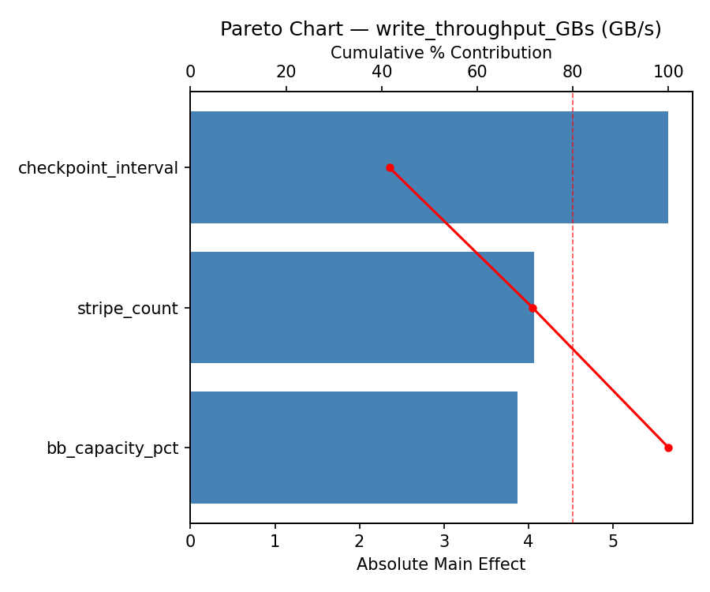
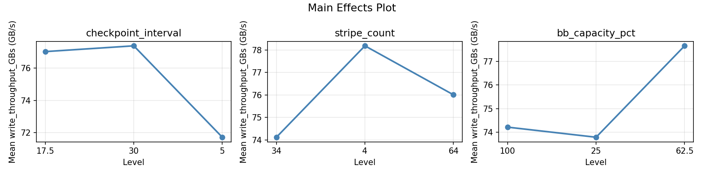
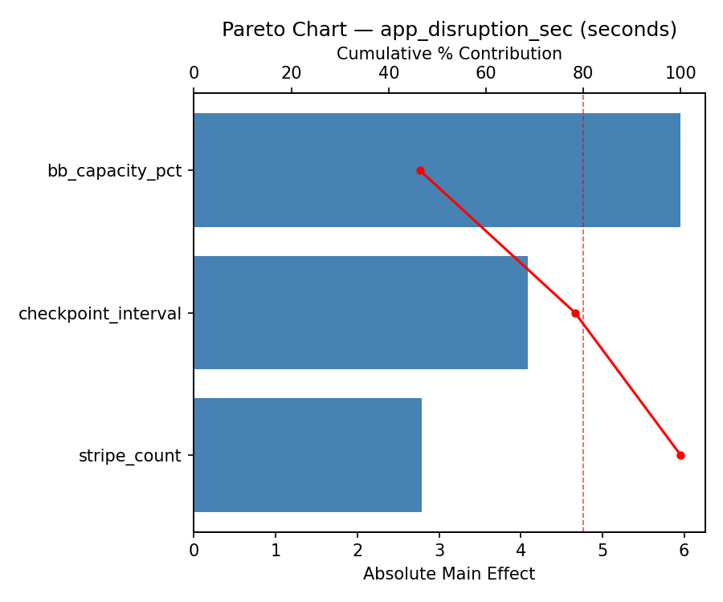
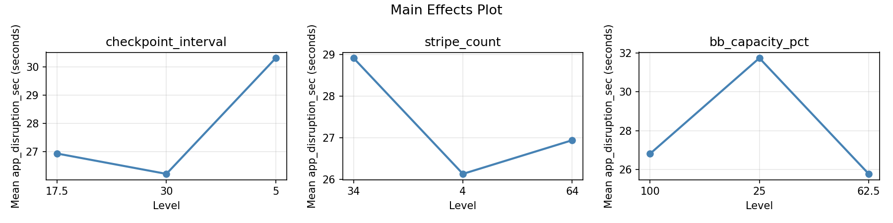
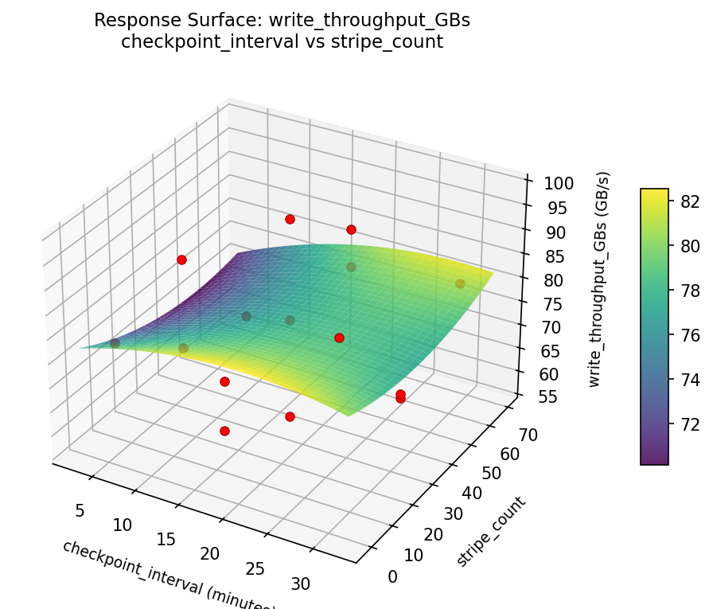
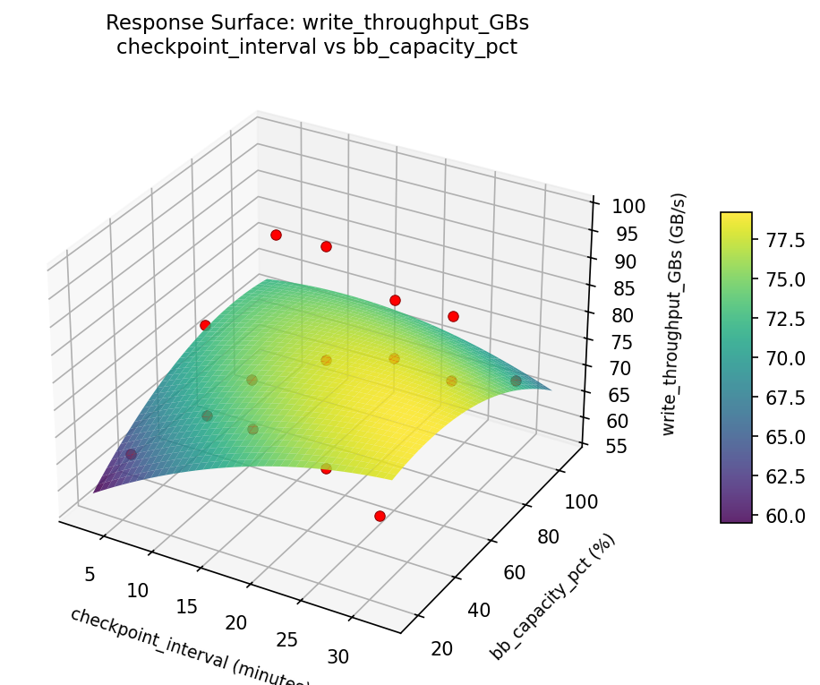
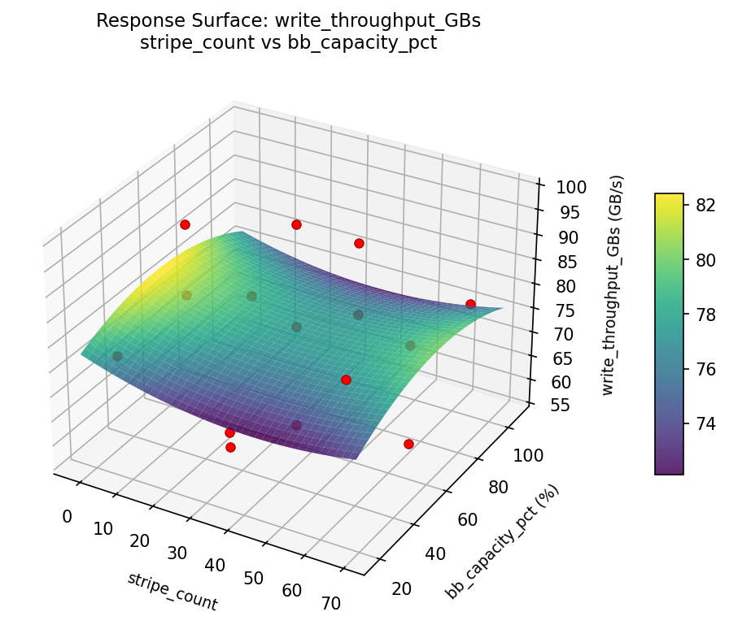
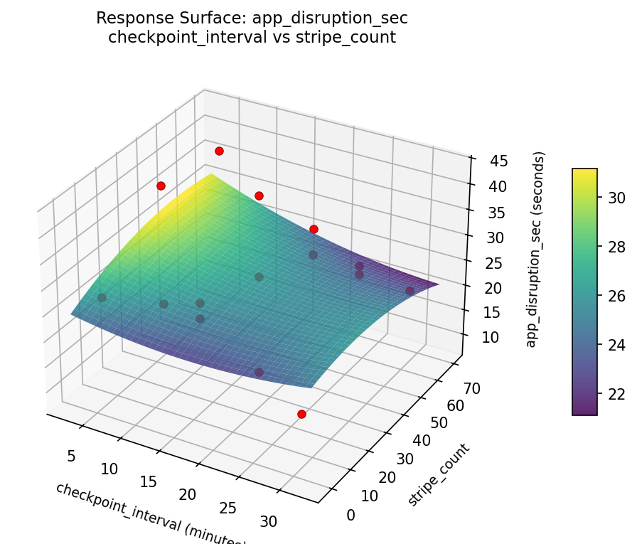
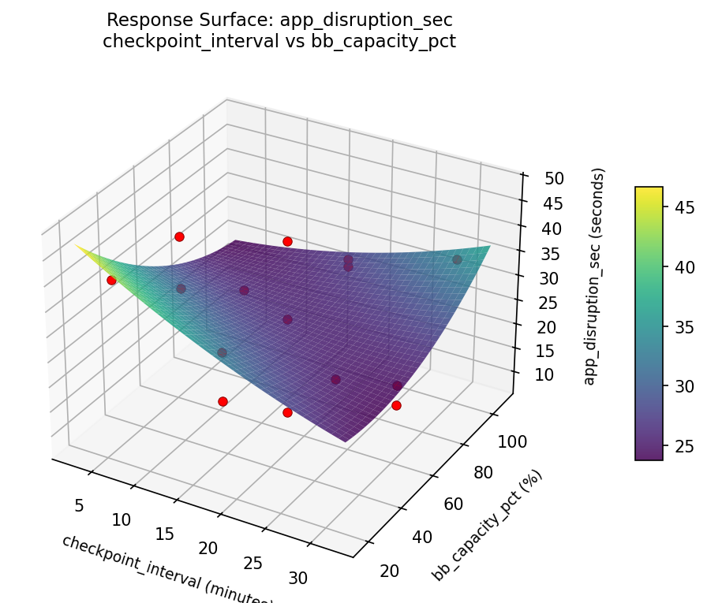
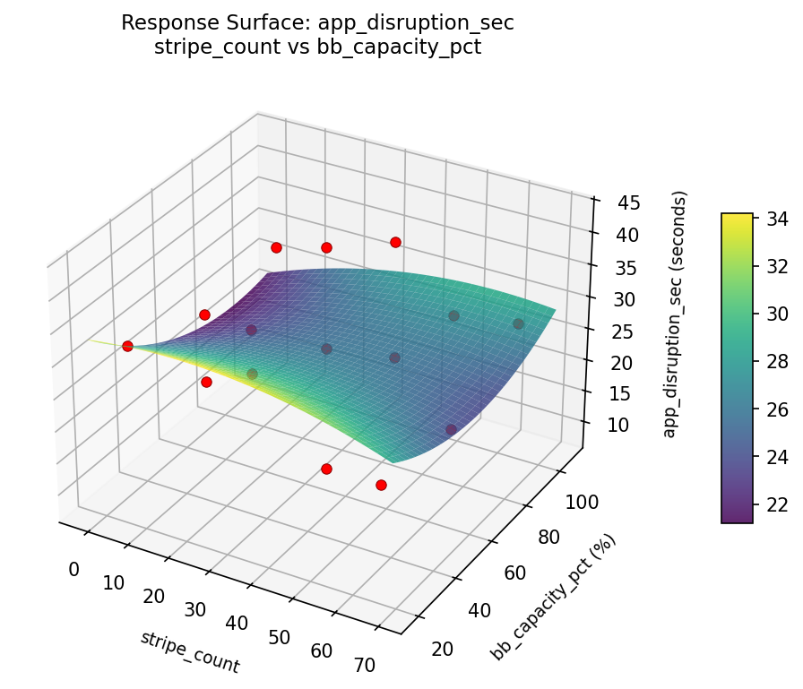

Experimental Setup
Factors
| Factor | Levels | Type | Unit |
|---|
checkpoint_interval | 5, 30 | continuous | minutes |
stripe_count | 4, 64 | continuous | |
bb_capacity_pct | 25, 100 | continuous | % |
Fixed: nodes = 1024, checkpoint_size_per_node = 16GB, filesystem = Lustre, burst_buffer = DataWarp
Responses
| Response | Direction | Unit |
|---|
write_throughput_GBs | ↑ maximize | GB/s |
app_disruption_sec | ↓ minimize | seconds |
Experimental Matrix
The Box-Behnken Design produces 15 runs. Each row is one experiment with specific factor settings.
| Run | checkpoint_interval | stripe_count | bb_capacity_pct |
|---|
| 1 | 17.5 | 4 | 25 |
| 2 | 17.5 | 34 | 62.5 |
| 3 | 30 | 34 | 100 |
| 4 | 30 | 34 | 25 |
| 5 | 17.5 | 34 | 62.5 |
| 6 | 17.5 | 34 | 62.5 |
| 7 | 5 | 34 | 100 |
| 8 | 30 | 4 | 62.5 |
| 9 | 17.5 | 4 | 100 |
| 10 | 30 | 64 | 62.5 |
| 11 | 5 | 34 | 25 |
| 12 | 17.5 | 64 | 100 |
| 13 | 5 | 4 | 62.5 |
| 14 | 5 | 64 | 62.5 |
| 15 | 17.5 | 64 | 25 |
How to Run
$ python doe.py info --config use_cases/19_checkpoint_restart/config.json
$ python doe.py generate --config use_cases/19_checkpoint_restart/config.json --output results/run.sh --seed 42
$ bash results/run.sh
$ python doe.py analyze --config use_cases/19_checkpoint_restart/config.json
$ python doe.py optimize --config use_cases/19_checkpoint_restart/config.json
$ python doe.py report --config use_cases/19_checkpoint_restart/config.json --output report.html
Analysis Results
Generated from actual experiment runs.
Response: write_throughput_GBs
Pareto Chart

Main Effects Plot

Response: app_disruption_sec
Pareto Chart

Main Effects Plot

Response Surface Plots
3D surfaces fitted with quadratic RSM. Red dots are observed data points.
write_throughput_GBs: checkpoint_interval vs stripe_count

write_throughput_GBs: checkpoint_interval vs bb_capacity_pct

write_throughput_GBs: stripe_count vs bb_capacity_pct

app_disruption_sec: checkpoint_interval vs stripe_count

app_disruption_sec: checkpoint_interval vs bb_capacity_pct

app_disruption_sec: stripe_count vs bb_capacity_pct

Full Analysis Output
=== Main Effects: write_throughput_GBs ===
Factor Effect Std Error % Contribution
--------------------------------------------------------------
stripe_count 10.7050 2.9663 38.6%
checkpoint_interval 10.7011 2.9663 38.6%
bb_capacity_pct 6.3232 2.9663 22.8%
=== Summary Statistics: write_throughput_GBs ===
checkpoint_interval:
Level N Mean Std Min Max
------------------------------------------------------------
17.5 7 80.4286 12.1757 65.0400 98.1700
30 4 69.7275 9.8680 57.2000 77.6200
5 4 73.4150 10.7406 60.4300 83.8000
stripe_count:
Level N Mean Std Min Max
------------------------------------------------------------
34 7 73.2443 11.9398 57.2000 92.0700
4 4 72.5050 11.2140 60.4300 85.5000
64 4 83.2100 10.1080 76.5800 98.1700
bb_capacity_pct:
Level N Mean Std Min Max
------------------------------------------------------------
100 4 77.1650 6.7662 68.9600 85.5000
25 4 79.1975 17.0051 57.2000 98.1700
62.5 7 72.8743 11.0265 60.4300 92.0700
=== Main Effects: app_disruption_sec ===
Factor Effect Std Error % Contribution
--------------------------------------------------------------
stripe_count 8.1589 2.4847 41.6%
checkpoint_interval 6.0129 2.4847 30.6%
bb_capacity_pct 5.4464 2.4847 27.8%
=== Summary Statistics: app_disruption_sec ===
checkpoint_interval:
Level N Mean Std Min Max
------------------------------------------------------------
17.5 7 25.5671 10.7707 8.2100 39.7400
30 4 31.5800 7.5620 27.3000 42.8700
5 4 27.3500 10.5885 16.3200 37.8800
stripe_count:
Level N Mean Std Min Max
------------------------------------------------------------
34 7 30.1014 10.5667 16.3200 42.8700
4 4 29.0525 6.5388 22.1800 37.8800
64 4 21.9425 10.2960 8.2100 31.8600
bb_capacity_pct:
Level N Mean Std Min Max
------------------------------------------------------------
100 4 29.0350 5.5141 22.1800 34.8000
25 4 23.6750 14.9983 8.2100 42.8700
62.5 7 29.1214 8.6058 16.5100 39.7400
Optimization Recommendations
=== Optimization: write_throughput_GBs ===
Direction: maximize
Best observed run: #12
checkpoint_interval = 17.5
stripe_count = 4
bb_capacity_pct = 100
Value: 98.17
Factor importance:
1. stripe_count (effect: 9.2, contribution: 37.0%)
2. bb_capacity_pct (effect: 9.0, contribution: 36.2%)
3. checkpoint_interval (effect: 6.7, contribution: 26.8%)
=== Optimization: app_disruption_sec ===
Direction: minimize
Best observed run: #12
checkpoint_interval = 17.5
stripe_count = 4
bb_capacity_pct = 100
Value: 8.21
Factor importance:
1. stripe_count (effect: 9.1, contribution: 48.6%)
2. bb_capacity_pct (effect: 7.1, contribution: 37.9%)
3. checkpoint_interval (effect: 2.5, contribution: 13.4%)